Image Classification on the Arduino UNO Q
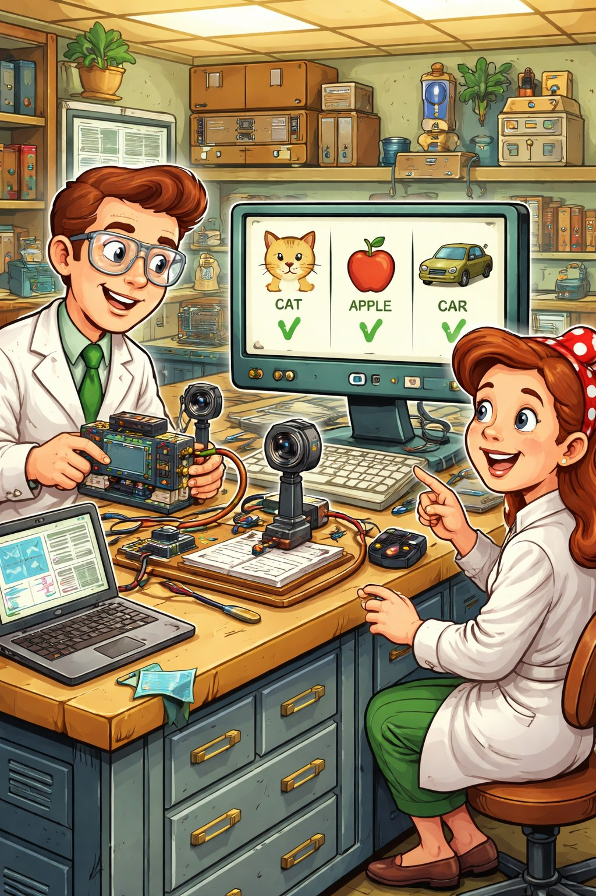
1. Overview
In the previous tutorial, we set up the Arduino UNO Q for headless development using ADB and SSH. Now, we put that foundation to work with our first Edge AI application: Image Classification.
Image classification is the “Hello World” of computer vision and machine learning — given an image, the model assigns it to one of several predefined categories. It is one of the most widely deployed ML tasks at the edge, powering applications from quality inspection in factories to wildlife monitoring in the field.
In this tutorial, we will:
- Part 1: Run the UNO Q’s pre-installed image classification example — a static image classifier where you upload a photo through a web browser and receive the classification result.
- Part 2: Build a custom image classifier from scratch using Edge Impulse Studio — training it to distinguish between a toy robot and a small Brazilian parrot (Periquito) — and deploy it to the UNO Q using two different approaches: Using the App Lab Bricks for static images and live webcam inference.
Along the way, we will use the UNO Q’s dual-brain architecture: Python on the MPU for AI inference and an Arduino sketch on the MCU for physical actuation (LEDs, LED matrix) — connected through Bridge RPC.
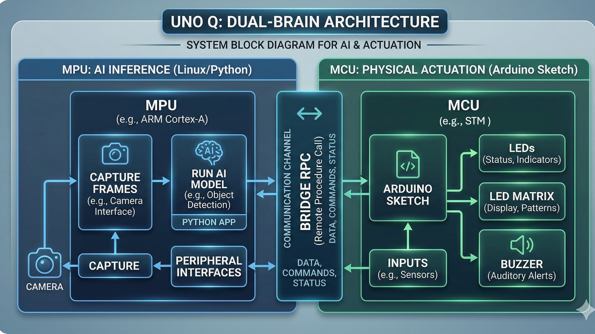
What You Will Learn
- How the pre-installed image classification Brick works (static image → web UI)
- How to go from static classification to live webcam inference
- How to collect image data and train a custom classifier with Edge Impulse Studio
- How to deploy models via App Lab Bricks
- How to bridge inference results to the MCU for real-time physical feedback
2. Prerequisites
Before starting this tutorial, make sure you have:
- Completed the Arduino UNO Q Setup Tutorial — UNO Q connected via SSH
- An Edge Impulse account (free at edgeimpulse.com)
- A USB webcam (most USB webcams work — e.g., Logitech C270 or similar)
- A USB hub with power delivery (to connect both the webcam and power to the UNO Q)

Hardware
| Item | Purpose |
|---|---|
| Arduino UNO Q (2 GB or 4 GB) | Edge AI inference + MCU actuation |
| USB webcam | Image capture (for Part 2 — live inference) |
| USB hub with PD | Connect webcam + power to the single USB-C port |
| (Optional) Toy robot + Periquito | Classification targets for the custom model |
Software
| Tool | Where |
|---|---|
| Edge Impulse Studio | Browser: studio.edgeimpulse.com |
| Edge Impulse Linux CLI + Python SDK | Installed on the UNO Q (in Part 2) |
An editor is not required — every step here works from an SSH terminal. If you’d rather use a full IDE, see VS Code Remote-SSH setup.
3. Computer Vision and Image Classification
At its core, computer vision enables machines to interpret and make decisions based on visual data — essentially mimicking the capability of the human optical system. When we bring ML algorithms into computer vision projects, we supercharge the system’s ability to understand, interpret, and react to visual stimuli.
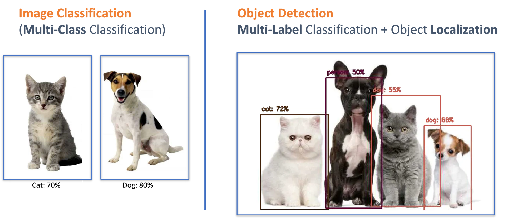
When discussing computer vision applied to embedded devices, the most common applications are Image Classification and Object Detection:
- Image Classification: Assigns a single label to the entire image (“This is a robot” or “This is a periquito”).
- Object Detection: Locates objects in the image, drawing bounding boxes and assigning labels to each detected object.
In this chapter, we cover Image Classification. Object Detection will be covered in the next tutorial.
From Nicla Vision to UNO Q
If you have worked through the TinyML Made Easy e-book, you have already built an image classifier on the Arduino Nicla Vision. Here is how the UNO Q approach differs:
| Aspect | Nicla Vision | Arduino UNO Q |
|---|---|---|
| Camera | Built-in GC2145 (320x240) | External USB webcam (up to 1080p) |
| Data Collection | OpenMV IDE + built-in camera | Edge Impulse Studio (smartphone, webcam, or upload) |
| Model size | MobileNetV2 0.05/0.1 (96x96, INT8) | MobileNetV2 0.35 or larger (96x96 to 320x320) |
| Inference engine | TF Lite for Microcontrollers (C++) | Edge Impulse Linux SDK or App Lab Bricks (Python) |
| RAM for model | ~256 KB SRAM | 2-4 GB LPDDR4X |
| Actuation | Direct GPIO from MCU | MCU via Bridge RPC |
| IDE | OpenMV IDE / Arduino IDE | SSH terminal + arduino-app-cli (VS Code Remote-SSH optional) |
The UNO Q can handle larger, more accurate models and higher-resolution input because inference runs on the Linux MPU with gigabytes of RAM. But the Nicla wins on power consumption (milliwatts vs. watts) and latency for very small models.
4. Part 1 — Running the Pre-Installed Image Classifier
The UNO Q ships with a pre-installed image classification example. This example uses an ImageClassification Brick and a WebUI Brick to provide a browser-based interface for uploading an image and receiving classification results.
No webcam is needed for this step.
Understanding the Architecture
The pre-installed examples:image-classification app works as follows:
Browser (your PC) UNO Q (MPU / Python)
+-------------------+ +-------------------------+
| | Upload image | |
| Web UI (port | ------------------> | ImageClassification |
| 7000) | (base64 via | Brick |
| | WebSocket) | |
| Shows results | <------------------ | Returns labels + |
| (labels + | Classification | confidence scores |
| confidence) | result | |
+-------------------+ +-------------------------+Key points:
- The classification runs on static images that you upload through the browser — there is no live camera feed.
- Results are displayed in the browser, not in the terminal logs.
- There is no Bridge communication to the MCU in this example.
- The ImageClassification Brick handles model loading, image preprocessing, and inference internally.
Step 1 — Start the Example
SSH into the UNO Q (or use the VS Code integrated terminal) and run:
arduino-app-cli app start examples:image-classificationWait for the app to build and start.
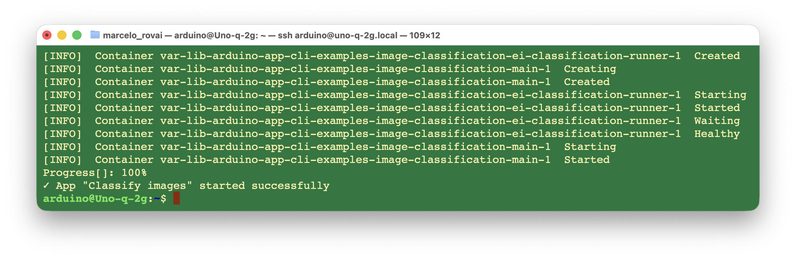
Step 2 — Open the Web UI
On your host computer, open a web browser and navigate to:
http://<UNO_Q_IP_ADDRESS>:7000You should see a web interface with an upload button that lets you select an image file from your computer.
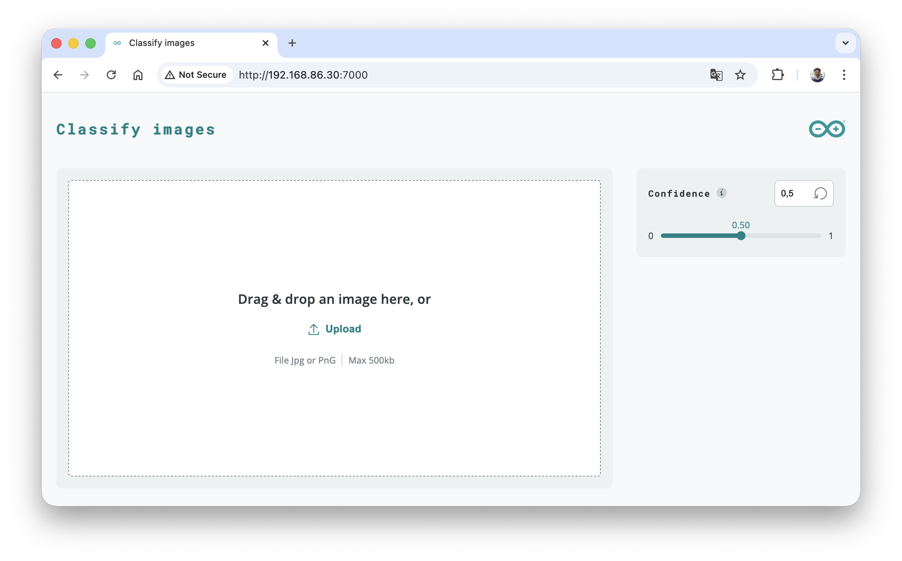
Step 3 — Classify an Image
- Click the upload button and select a photo from your computer (e.g., a picture of an animal, a car, a household object).
- The image is sent to the UNO Q, where the ImageClassification Brick processes it.
- After a moment, the classification result appears in the browser — showing the detected label(s), and the confidence scores..
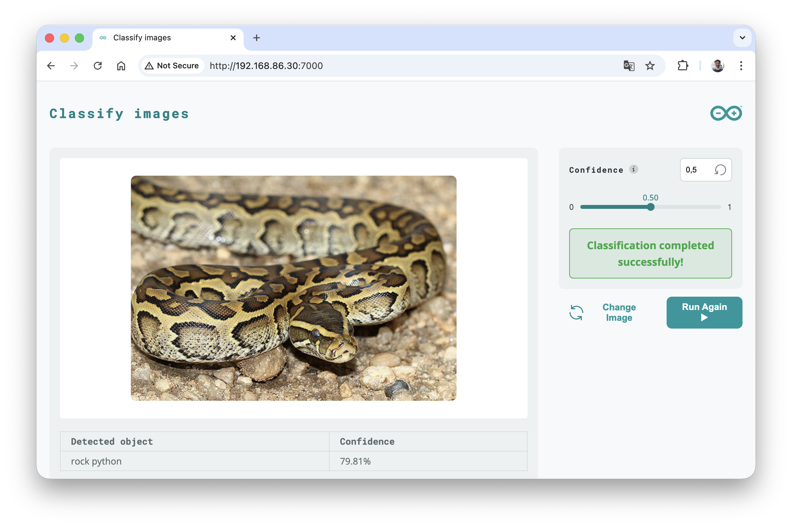
Try uploading different images and observe how the model classifies them.
Note: The terminal logs (
arduino-app-cli app logs examples:image-classification) will show the app startup messages but will not show the classification results — those are sent directly to the browser via WebSocket.
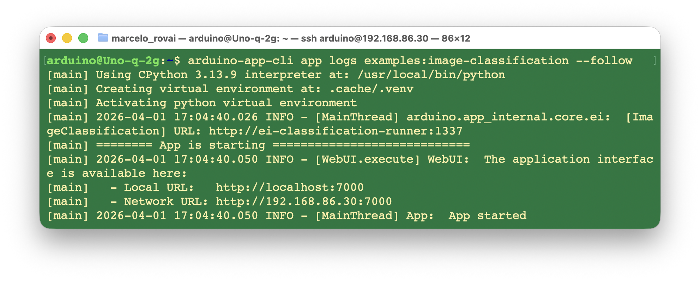
Step 4 — Study the Source Code
Read through the example’s source to understand how it works. From an SSH terminal:
cat /var/lib/arduino-app-cli/examples/image-classification/python/main.pyOr, if you’re using VS Code Remote-SSH (see chapter 4 §2 for setup), open the folder and browse python/main.py directly:
- File > Open Folder…
- Navigate to
/var/lib/arduino-app-cli/examples/image-classification/ - Open
python/main.py.
The key components:
# The Bricks handle all the heavy lifting
from arduino.app_bricks.web_ui import WebUI
from arduino.app_bricks.image_classification import ImageClassification
# Initialize the classification brick (loads the model internally)
image_classification = ImageClassification()
# Callback: when the browser sends an image, classify it and return the result
def on_classify_image(client_id, data):
image_data = data.get('image') # Base64-encoded image from browser
image_bytes = base64.b64decode(image_data)
pil_image = Image.open(io.BytesIO(image_bytes))
results = image_classification.classify(pil_image) # Run inference
ui.send_message('classification_result', response) # Send back to browser
# Set up the WebUI and register the callback
ui = WebUI()
ui.on_message('classify_image', on_classify_image)
App.run()Notice that:
ImageClassification()is a Brick—a prebuilt module that encapsulates the model and inference logic.WebUI()provides the web server and WebSocket communication.App.run()starts the app without auser_loop— it is event-driven (triggered by browser uploads).- There is no
Bridge.call()— the MCU is not involved.
Step 5 — Stop the Example
arduino-app-cli app stop examples:image-classificationRuning an Example from Arduino App Lab
We will not go into more detail here because there is plenty of documentation on it. But the main steps are:
- Open the Arduino App Lab on your main computer and connect your Arduino UnoQ via WiFi
- Enter your password (8 digits)
- On
Examples, go toClassify Images
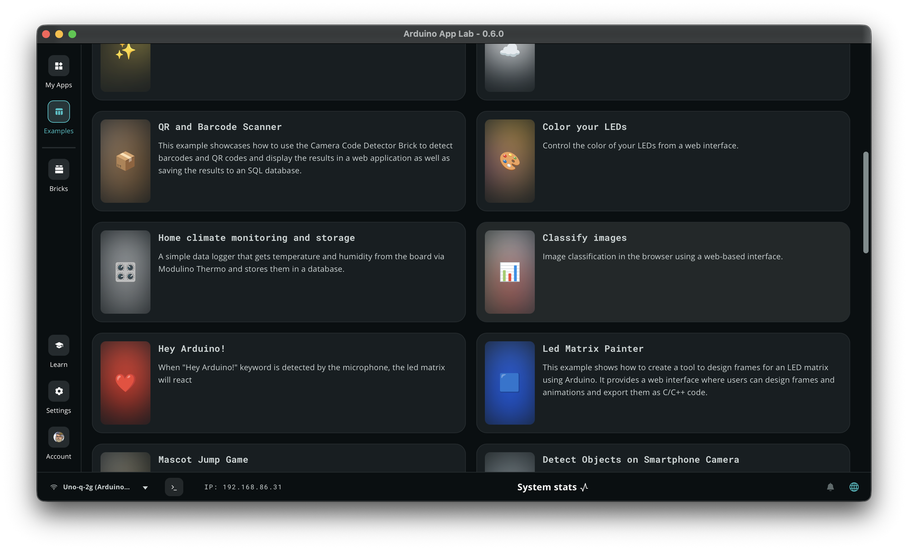
- Run it. The Web GUI will be opened automatically, as we saw before.
What We Learned from Part 1
The pre-installed example demonstrates the Brick-based approach: high-level components that abstract away model loading, image processing, and web communication. This is convenient for quick demos, but it has limitations:
- Static images only (no live camera feed)
- Results stay in the browser (no MCU actuation)
- Limited control over the inference pipeline
In Part 2, we will build our own classifier that overcomes all of these limitations.
5. Part 2 — Building a Custom Image Classifier
Now we build a custom classifier from scratch. Following the same project used in the TinyML Made Easy e-book, we will train a model to classify three categories:
- Robot — a small toy robot
- Periquito — a small Brazilian parrot toy
- Background — no object present
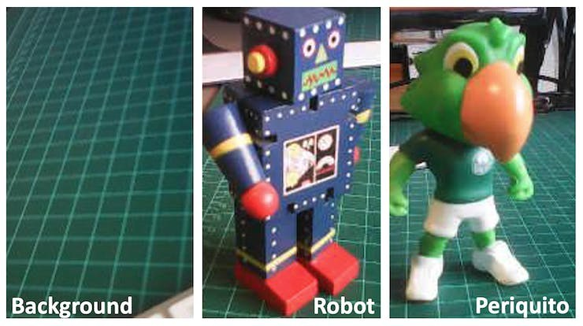
Project Goal
Build a system that continuously captures frames from a USB webcam, classifies what it sees, and provides physical feedback through the MCU:
USB Webcam -> Python (MPU) -> EI model -> "robot" / "periquito" / "background"
|
Bridge.call("show_result", label, confidence)
|
MCU (Arduino sketch)
-> RGB LEDs (color per class)
-> LED matrix (icon per class)This is fundamentally different from Part 1: live inference (not static uploads), MCU actuation (not just browser display), and a custom model (not a generic pre-trained one).
We show two deployment paths — you can choose one or try both:
- Path A (Section 8): Deploy via App Lab Bricks — uses the same Brick architecture as the pre-installed example, but with your custom Edge Impulse model. Quick to set up, but limited to static uploads.
- Path B (Section 9): Deploy via the Edge Impulse Linux Python SDK — gives you full control over the inference pipeline, live camera capture, and Bridge communication. Recommended for real projects.
6. Data Collection
The most crucial step in any ML project is collecting a high-quality dataset.
Option A: Using Edge Impulse Studio with a Smartphone (Recommended)
- Go to Edge Impulse Studio and create a new project (e.g., “UNO-Q Image Classification”).
- Go to Devices and click Connect a new device.
- Select Use your mobile phone — a QR code will appear.
- Scan the QR code with your smartphone.
- Once connected, go to Data acquisition.
- Set the Label (e.g., “periquito”), select Camera, and click Start sampling.
- Capture ~50-60 images from different angles, distances, and lighting conditions.
- Repeat for “robot” and “background”.
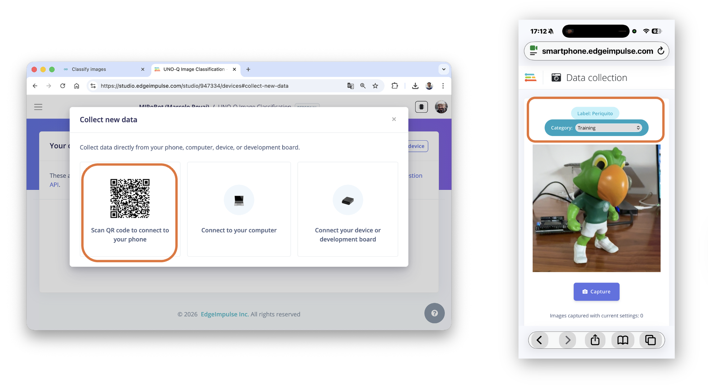
Option B: Capturing Images on the UNO Q
You can capture images directly from the USB webcam on the UNO Q. For that, create a script, for example: capture_images.py:
import cv2
import os
import time
label = "robot" # Change for each class
output_dir = f"/home/arduino/dataset/{label}"
os.makedirs(output_dir, exist_ok=True)
cap = cv2.VideoCapture(0)
cap.set(cv2.CAP_PROP_FRAME_WIDTH, 320)
cap.set(cv2.CAP_PROP_FRAME_HEIGHT, 240)
count = 0
print(f"Capturing images for class '{label}'. Press Ctrl+C to stop.")
try:
while count < 60:
ret, frame = cap.read()
if ret:
filename = f"{output_dir}/{label}_{count:03d}.jpg"
cv2.imwrite(filename, frame)
print(f"Saved: {filename}")
count += 1
time.sleep(0.5)
except KeyboardInterrupt:
pass
cap.release()
print(f"Captured {count} images for '{label}'.")Install OpenCV if needed:
# On Debian/Ubuntu systems, you need to install the python3-venv package using the following command.
sudo apt install python3.13-venv
# 1) criar o env (ainda NÃO existe a pasta cv2-env)
python3.13 -m venv ~/envs/cv2-env
# 2) ativar o env
source ~/envs/cv2-env/bin/activate
# 3) instalar OpenCV (melhor a versão headless)
pip install --upgrade pip
pip install opencv-python-headless
# 4) run the script:
python3 capture_images.pyThe images will be stored on the Uno-Q (dataset/robot, periquito, etc.). Copy them to your computer with
scp(scp -r arduino@<UNO_Q_IP>:~/path/to/dataset ./dataset) or by dragging them in VS Code’s file explorer, then upload them to Edge Impulse Studio via Data acquisition > Upload data.
Option C: Reusing Images from the Nicla Vision Tutorial
If you already have images from the TinyML Made Easy e-book, upload them to Edge Impulse Studio via Data acquisition > Upload data, selecting the correct label for each batch.
Dataset Guidelines
- ~50-60 images per class (minimum)
- Varied angles, lighting, and backgrounds
- Include a “background” class (images with no target objects)
Tip: More diverse training data produces more robust models.
7. Training the Model with Edge Impulse Studio
Step 1 — Verify the Dataset
In Edge Impulse Studio, go to Data acquisition and verify your data is correctly labeled and balanced.
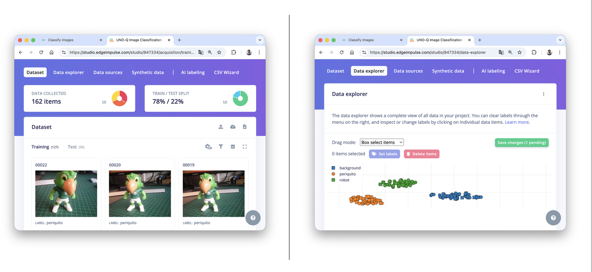
You can clone a similar project: NICLA-Vision_Image_Classification
Step 2 — Create the Impulse
- Go to Create impulse.
- Set input size: 160x160 for higher accuracy on UNO Q.
- Add Image as the processing block.
- Add Transfer Learning (Images) as the learning block.
- Set output features:
robot,periquito,background. - Click Save Impulse.
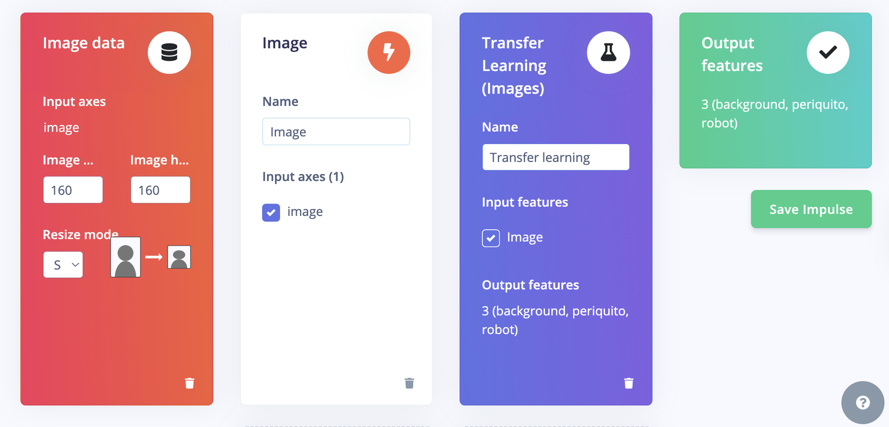
Step 3 — Generate Features
- Go to the Image tab.
- Set color depth to RGB.
- Click Save parameters, then Generate features.
Step 4 — Train the Model
- Go to the Transfer Learning tab.
- Select MobileNetV2 160x160 1.0 (recommended for UNO Q).
- Set training cycles to 20.
- Enable Data augmentation.
- Click Start training.
Review the accuracy, confusion matrix, and on-device performance.
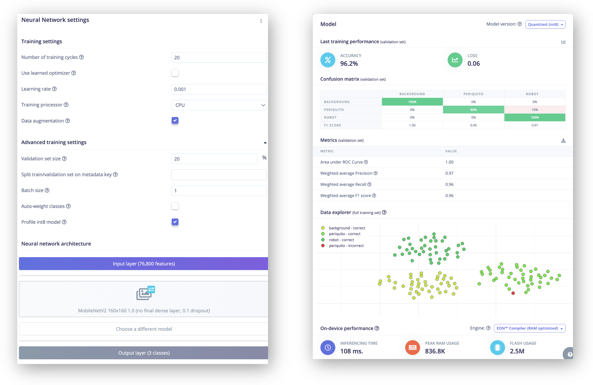
On Training, the model reached a high accuraccy (with a estimated latency of 100ms). With models with smaller alphas (0.35, for example), we can get faster inferences with similar accuraccy. you should test the better parameters for you project.
Step 5 — Test the Model
Go to Model testing. On settings, enable Int8 and click Classify all to validate on the test dataset.
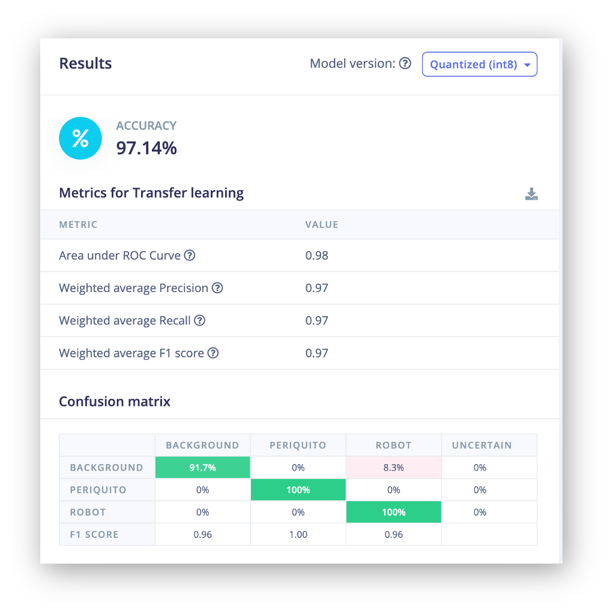
8. Deploying to the UNO Q — Path A: App Lab Bricks
This path uses the Brick architecture with your custom model. Quick to set up, but limited to static image uploads via the browser.
Step 1 — Copy the Pre-Installed Example
We can copy an example using CLI as below
cp -r /var/lib/arduino-app-cli/examples/image-classification/ ~/ArduinoApps/my-classifier-bricksOr directly on the Arduino App Lab, giving it a new name. The project will be copied to My Apps area.
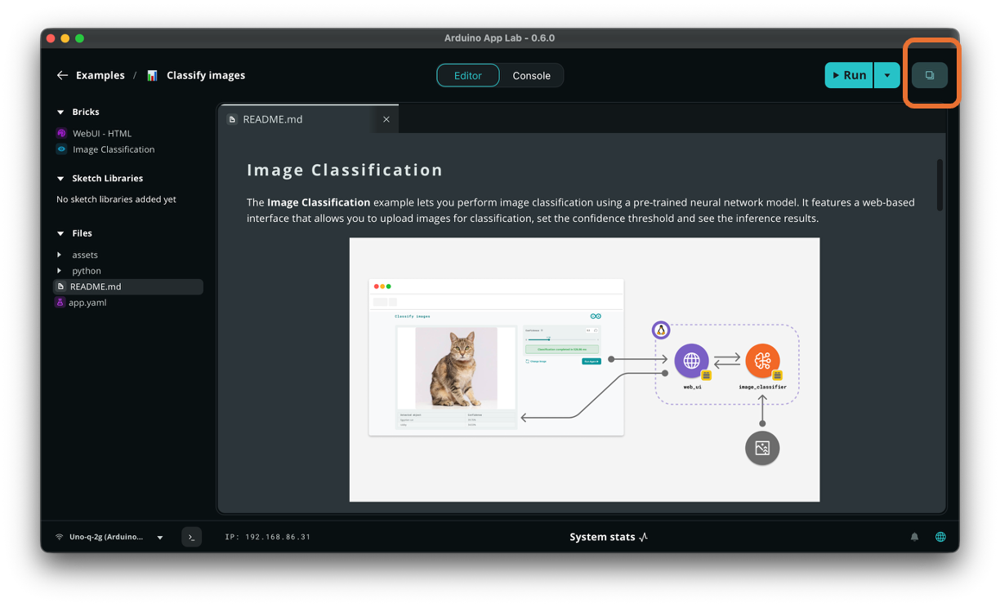
Step 2 — Export the Model from Edge Impulse to the Arduino App Lab
- In the copied example, stored on the
My Appsarea, go to theBricks/Image Classification, selectAI modelsandTrain new AI model
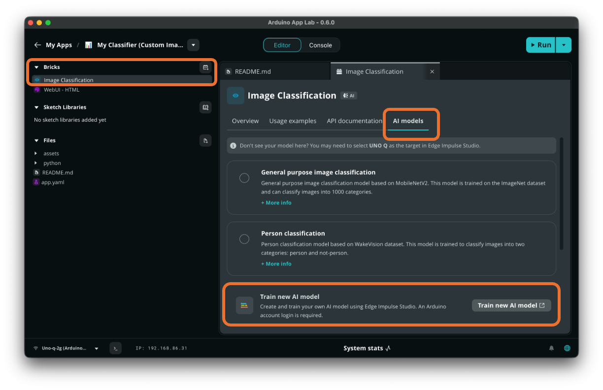
- An window will ask you to log in the Arduino/Edge Impulse account. Do it and you will be direct your Edge Impulse Studio project list. Enter in your project (in my case: UNO-Q Image Classification)
- In the project, go to Deployment.
- Select Arduino UNO Q as the target (or Linux AARCH64).
- Click Build and download the model file.
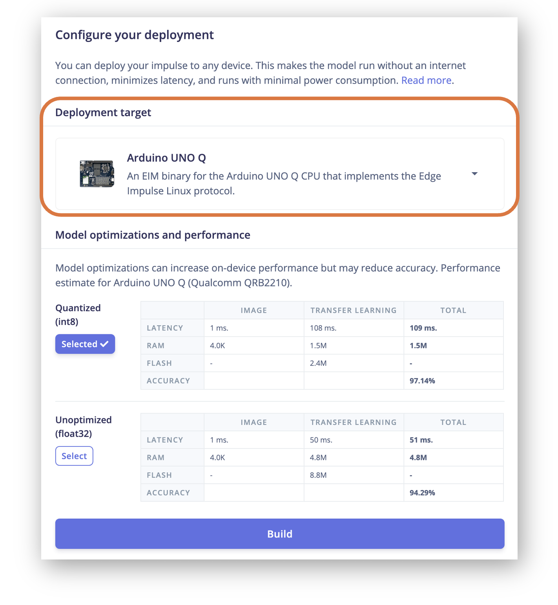
When the project is built, the .eim file will be downloded directly to your computer and a Pop-up window will appear, with a button Go to Arduino. When you do it, the model will be sent to App Lab.
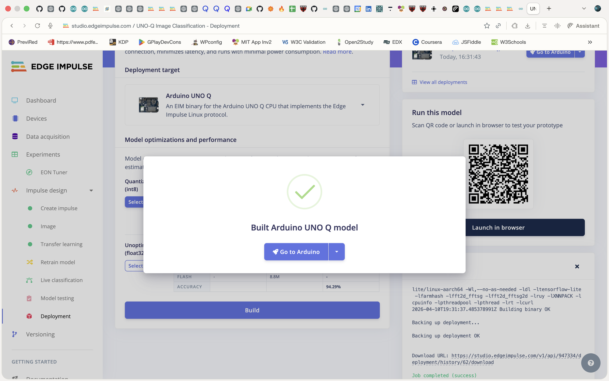
Note that you can test your model, downloading it to your mobile of PC, using the Bar code availabel on the deploy page.
Step 3 — Replace the Model on the Uno-Q
At the AI Models area of your project, the model will be available, download it to the Uno-Q and after that select it.
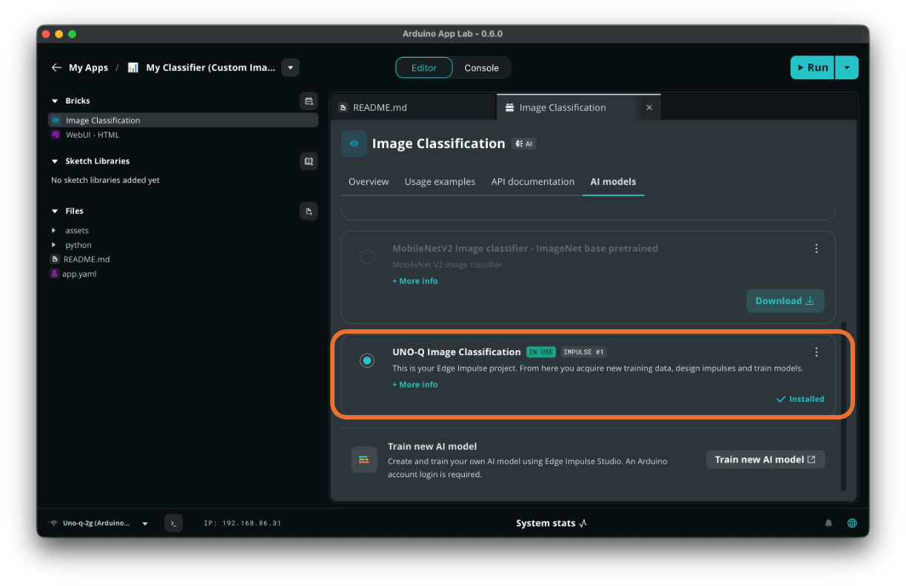
On the project folder (~/ArduinoApps/my-classifier-bricks) , the Brick configuration in app.yaml is automatically updated to point to your custom model.:
name: My Classifier (Custom Images)
description: Custom Image classification in the browser using a web-based interface.
ports: []
bricks:
- arduino:image_classification:
model: ei-model-947334-1
- arduino:web_ui: {}
icon: 📊The model (model.eim), will be saved on /home/arduino/.arduino-bricks/models/custom-ei/ei-model-947334-1
Step 4 — Run the App
cd ~/ArduinoApps/my-classifier-bricks
arduino-app-cli app start .Open http://<UNO_Q_IP>:7000 in your browser. Upload images of your robot, periquito, or background — the classifier now uses your custom model.
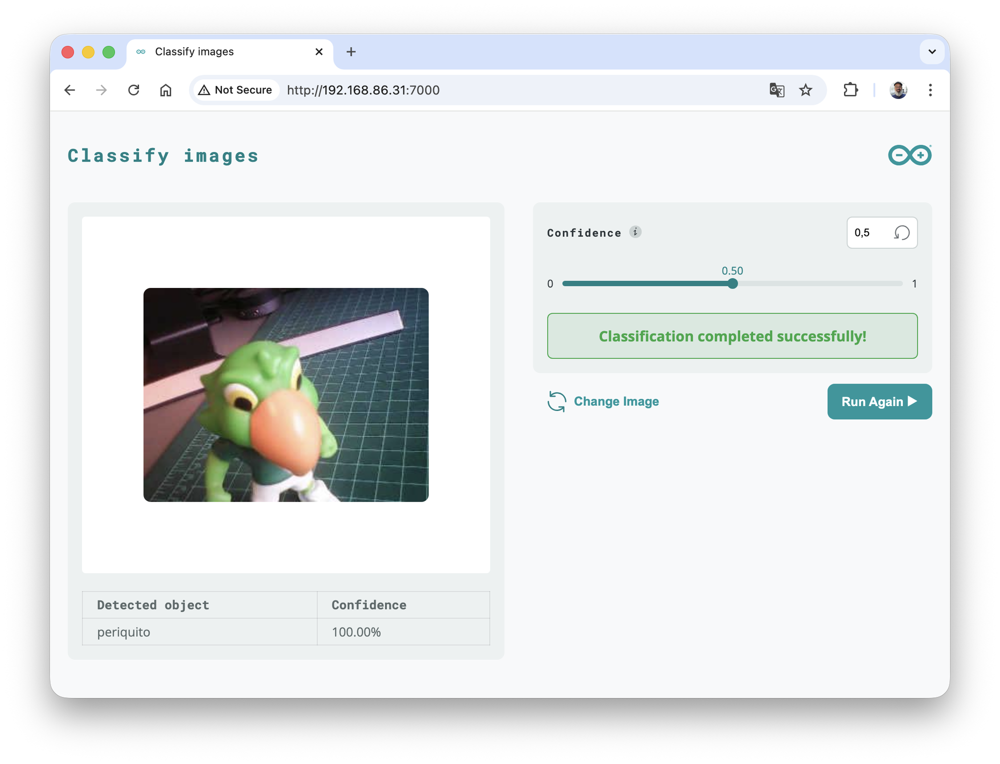
Limitation: This approach still uses static image uploads via the browser. For live webcam inference with MCU actuation, proceed to Path B.
But, before it, let’s change the main.c file to show the info about our new model and to print the inference result.
First, stop the app:
arduino-app-cli app stop .On the main.c file, enter with the code:
from arduino.app_utils import App
from arduino.app_bricks.web_ui import WebUI
from arduino.app_bricks.image_classification import ImageClassification
from PIL import Image
import io
import base64
import time
image_classification = ImageClassification()
def print_model_info(image_classification):
info = image_classification.get_model_info()
if info is not None:
print("Model info:")
for attr in dir(info):
if not attr.startswith("_") and not callable(getattr(info, attr)):
print(f" {attr}: {getattr(info, attr)}")
else:
print("Failed to retrieve model info.")
def on_classify_image(client_id, data):
"""Callback function to handle image classification requests."""
try:
image_data = data.get('image')
image_type_raw = data.get('image_type')
if image_type_raw:
image_type = image_type_raw.split('/')[-1]
else:
image_type = 'jpeg'
confidence = data.get('confidence', 0.25)
if not image_data:
ui.send_message('classification_error', {'error': 'No image data'})
return
image_bytes = base64.b64decode(image_data)
pil_image = Image.open(io.BytesIO(image_bytes))
start_time = time.time() * 1000
results = image_classification.classify(pil_image, image_type=image_type, \
confidence=confidence)
print(f"\nInference: {results}")
diff = time.time() * 1000 - start_time
print(f"Latency: {diff:.2f} ms")
if results is None:
ui.send_message('classification_error', {'error': 'No results returned'})
return
response = {
'success': True,
'results': results,
'processing_time': f"{diff:.2f} ms"
}
ui.send_message('classification_result', response)
except Exception as e:
ui.send_message('classification_error', {'error': str(e)})
print_model_info(image_classification)
ui = WebUI()
ui.on_message('classify_image', on_classify_image)
App.run()Run the app:
arduino-app-cli app start .Open a second terminal, go to the project folder and run:
cd ~/ArduinoApps/my-classifier-bricks
arduino-app-cli app logs . --follow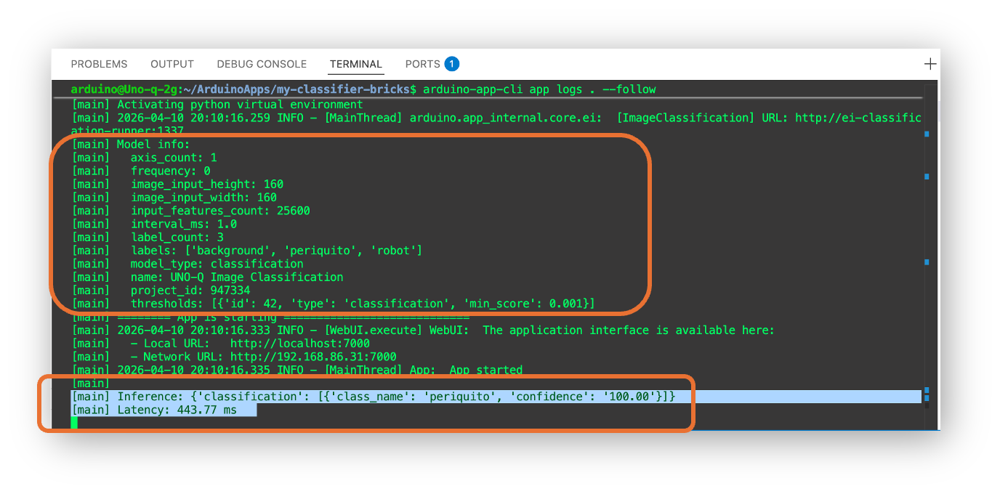
We can see that our custom classification model receives images of 160x160 and that our labels are:
labels: ['background', 'periquito', 'robot']
The latency of this model is around 444 ms, or a little over 2 FPS.
If we need a faster model, we can train a new model using a small image (as 96x96) or a reduced model, with an Alpha as 0.35 for example.
9. Deploying to the UNO Q — Path B: Live Camera
This path gives you full control: live webcam capture, continuous classification, and Bridge communication to the MCU.
Step 1 — Create a new App on Arduino App Lab
On The Arduino App Lab My Apps, click on the upper righ button Create new app
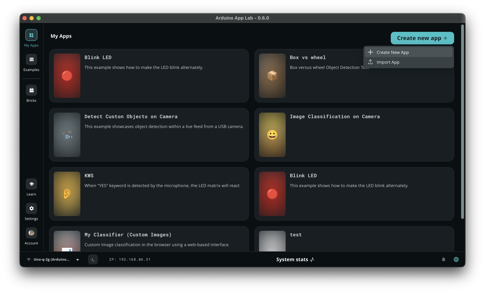
And name it, for example: Image Classification on Camera.
Step 2 — Import a Brick and Select the Model
Go to Bricks and click on Add Brick.
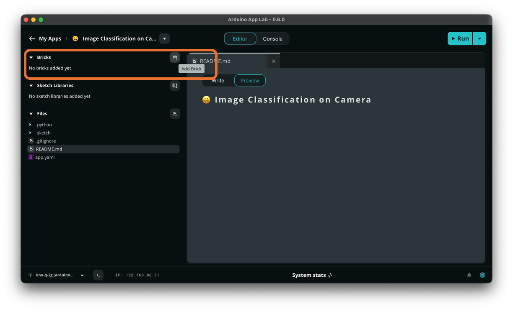
A list of available Bricks will appear, Scroll down untill Video Image Classification and Add brick.
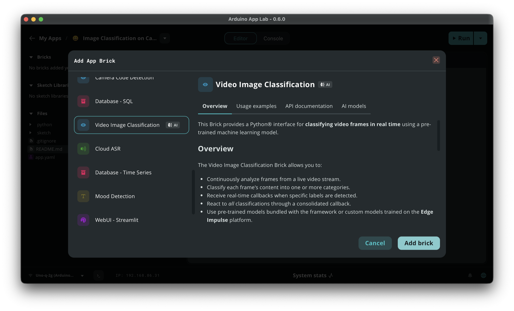
As you did on the previous section, once the brick is installed, go to the AI Models tab and select Uno-Q Image. Classification, deployed on the last section.
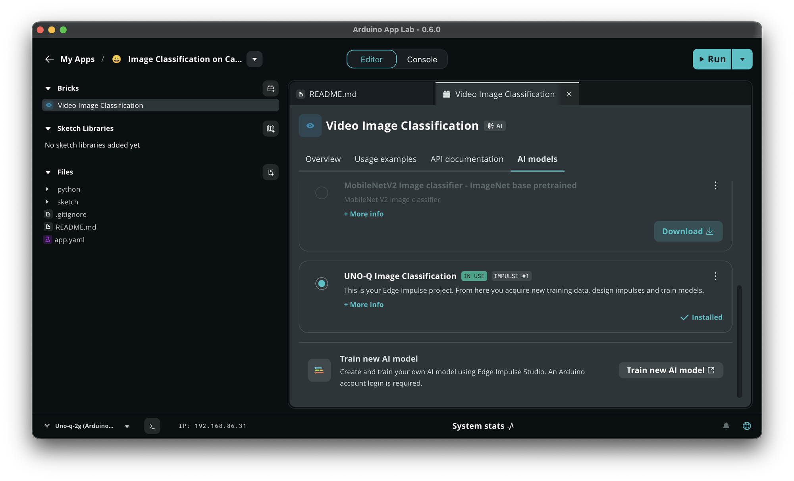
Note that the app. yaml is automatically created when the model is selected, pointing to the customized model:
name: Image Classification on Camera
description: ""
ports: []
bricks:
- arduino:video_image_classification:
model: ei-model-947334-1
icon: 😀Step 3 — Create a new main.c file
The file main.c is a generic file on which should be defined for our model.
The most important part of the code is the VideoImageClassification class
class VideoImageClassification(camera: BaseCamera | None,
confidence: float,
debounce_sec: float)This is a module for image classification on a live video stream using a specified machine learning model. It provides a way to react to detected classes over a video stream, invoking registered actions in real-time.
Parameters
- camera (BaseCamera): The camera instance used to capture video. If None, a default camera will be initialized.
- confidence (float): The minimum confidence level for a classification to be considered valid. Default is 0.3.
- debounce_sec (float): The minimum time in seconds between consecutive detections of the same object to avoid multiple triggers. Default is 0 seconds.
Here is the complete code:
from arduino.app_utils import App
from arduino.app_bricks.video_imageclassification import VideoImageClassification
# Create a classification stream with default confidence threshold (0.5)
classification_stream = VideoImageClassification(confidence=0.5)
# Callback when "periquito" is detected
def periquito_detected():
print("Detected periquito!")
# Callback when "robot" is detected
def robot_detected():
print("Detected robot!")
# Subscribe to your specific labels
classification_stream.on_detect("periquito", periquito_detected)
classification_stream.on_detect("robot", robot_detected)
# Optional: callback for all classifications (useful for debugging)
def all_detected(results):
# results is a list of dicts like {"label": "periquito", "confidence": 0.85}
print("Classification results:", results)
classification_stream.on_detect_all(all_detected)
# Run the app
App.run()Run the app:
cd ~/ArduinoApps/image-classification-on-camera
arduino-app-cli app start .Open a second terminal, go to the project folder and run:
cd ~/ArduinoApps/image-classification-on-camera
arduino-app-cli app logs . --follow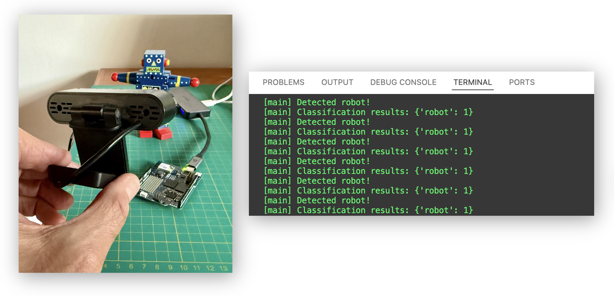
10. Post-Processing: MCU Actuation via Bridge
In the previous section, we got live image classification running via the VideoImageClassification Brick, with detection callbacks printing results to the log. Now, we add the MCU side — using Bridge RPC to drive the LED matrix, based on what the camera sees.
Architecture
USB Webcam -> VideoImageClassification Brick -> on_detect("robot", callback)
-> on_detect("periquito", callback)
|
Bridge.call("show_result", label)
|
MCU (Arduino sketch)
-> LED Matrix; "simple face" = robot
-> LED Matrix: "bird" = periquito
-> LED Matrix: "empty" = background/unknownStep 1 — Add a Sketch to the Project
Our project from Section 9 (image-classification-on-camera) currently has no sketch/ folder — the MCU is not involved. We need to add one.
In VS Code (or via terminal), create the sketch directory (if it does not alheady exist) :
cd ~/ArduinoApps/image-classification-on-camera
mkdir -p sketchStep 2 — Write the Arduino Sketch
Here, we use matrix.renderBitmap(frame, 8, 13) to render an 8×13 matrix, and we include the Arduino_LED_Matrix.h library in sketch.ino. The patterns are simple pixel art — you can refine them later using the Arduino LED Matrix Editor (adjusting for 13 columns instead of 12).
Create (or modify) sketch/sketch.ino:
#include "Arduino_RouterBridge.h"
#include "Arduino_LED_Matrix.h"
ArduinoLEDMatrix matrix;
// 8x13 patterns for each class
// Robot icon (simple face)
uint8_t robot_frame[8][13] = {
{0,0,1,1,1,1,1,1,1,1,1,0,0},
{0,1,0,0,0,0,0,0,0,0,0,1,0},
{0,1,0,1,1,0,0,0,1,1,0,1,0},
{0,1,0,1,1,0,0,0,1,1,0,1,0},
{0,1,0,0,0,0,0,0,0,0,0,1,0},
{0,1,0,0,1,1,1,1,1,0,0,1,0},
{0,1,0,0,0,0,0,0,0,0,0,1,0},
{0,0,1,1,1,1,1,1,1,1,1,0,0}
};
// Bird icon (simple periquito)
uint8_t bird_frame[8][13] = {
{0,0,0,0,0,1,1,0,0,0,0,0,0},
{0,0,0,0,1,1,1,1,0,0,0,0,0},
{0,0,0,1,1,0,1,1,1,0,0,0,0},
{0,1,1,1,1,1,1,1,0,0,0,0,0},
{0,0,0,1,1,1,1,1,1,1,1,0,0},
{0,0,0,0,1,1,1,1,1,0,0,0,0},
{0,0,0,0,0,1,0,1,0,0,0,0,0},
{0,0,0,0,0,1,0,1,0,0,0,0,0}
};
// Empty frame (background / nothing detected)
uint8_t empty_frame[8][13] = {
{0,0,0,0,0,0,0,0,0,0,0,0,0},
{0,0,0,0,0,0,0,0,0,0,0,0,0},
{0,0,0,0,0,0,0,0,0,0,0,0,0},
{0,0,0,0,0,0,0,0,0,0,0,0,0},
{0,0,0,0,0,0,0,0,0,0,0,0,0},
{0,0,0,0,0,0,0,0,0,0,0,0,0},
{0,0,0,0,0,0,0,0,0,0,0,0,0},
{0,0,0,0,0,0,0,0,0,0,0,0,0}
};
void setup() {
matrix.begin();
matrix.renderBitmap(empty_frame, 8, 13);
Bridge.begin();
Bridge.provide("show_result", show_result);
}
void loop() {
}
void show_result(String label) {
if (label == "robot") {
matrix.renderBitmap(robot_frame, 8, 13);
} else if (label == "periquito") {
matrix.renderBitmap(bird_frame, 8, 13);
} else {
matrix.renderBitmap(empty_frame, 8, 13);
}
}Create (or modify) sketch/sketch.yaml:
profiles:
default:
platforms:
- platform: arduino:zephyr
libraries:
- Arduino_RouterBridge (0.3.0)
- dependency: Arduino_RPClite (0.2.1)
- dependency: ArxContainer (0.7.0)
- dependency: ArxTypeTraits (0.3.2)
- dependency: DebugLog (0.8.4)
- dependency: MsgPack (0.4.2)
default_profile: defaultStep 3 — Update the Python Script to Call Bridge
Modify python/main.py to send classification results to the MCU via Bridge. In the previous example, we created abd use separate on_detect callbacks. Here we will use only on_detect_all and pick the highest-confidence result from there. This removes the individual on_detect("periquito", ...) / on_detect("robot", ...) callbacks entirely and relies on a single on_detect_all that always picks the top class. The current_label check ensures we only send a Bridge call when the result actually changes.
Also lowered the confidence to 0.3 so that “background” detections (which sometimes have lower confidence) still come through. You can tune this after testing.
from arduino.app_utils import App, Bridge
from arduino.app_bricks.video_imageclassification import VideoImageClassification
classification_stream = VideoImageClassification(confidence=0.3)
current_label = ""
# Priority order: robot and periquito take precedence over background
PRIORITY = {"robot": 2, "periquito": 1, "background": 0}
def all_detected(results):
global current_label
print(f"Raw results: {results}")
if results:
# Pick the highest-priority label from the results
label = max(results, key=lambda r: PRIORITY.get(r, -1))
else:
label = "background"
if label != current_label:
current_label = label
Bridge.call("show_result", label)
print(f"==> {label}")
classification_stream.on_detect_all(all_detected)
App.run()Note: We use a
current_labelvariable to avoid sending redundant Bridge calls every frame. The LED Matrix only changes when the detected class actually changes.
Step 4 — Verify the Updated Project Structure
Your project should now look like this:
image-classification-on-camera/
├── app.yaml
├── python/
│ └── main.py
└── sketch/
├── sketch.ino
└── sketch.yamlThe app.yaml should already point to your custom model from Section 9:
name: Image Classification on Camera
description: ""
ports: []
bricks:
- arduino:video_image_classification:
model: ei-model-947334-1
icon: 😀Step 5 — Run the Complete System
Stop any running app first:
arduino-app-cli app stop .Start the updated project:
arduino-app-cli app start .Note: The first run after adding the sketch will take longer, as the system compiles the Arduino code for the MCU.
Step 6 — Test the System
Monitor the logs:
arduino-app-cli app logs . --followNow place objects in front of the camera and observe:
- Robot in front of the webcam → A face lights up + log shows “raw results: {‘robot’: 1}”
- Periquito in front of the webcam → A bird lights up + log shows “Raw results: {‘periquito’: 1}”
- No object (or unknown object) → empty lights up + “Raw results: {‘background’: 1}”
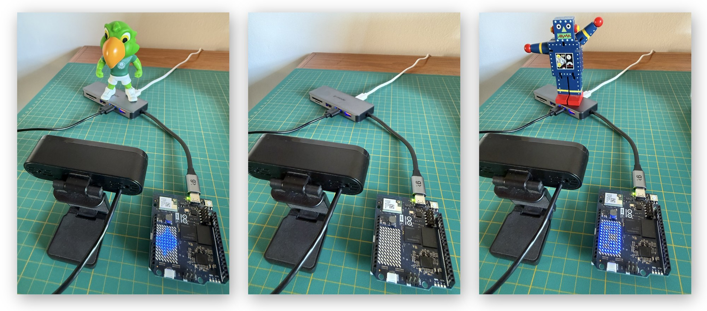
Step 7 — Stop the App
arduino-app-cli app stop .Extending the MCU Actuation
The Arduino sketch can be extended with additional feedback:
External LEDs:
#include "Arduino_RouterBridge.h"
// Use digital pins for external LEDs (or replace with correct RGB LED macros)
#define MY_LED_BLUE 2
#define MY_LED_GREEN 3
#define MY_LED_RED 4
void setup() {
pinMode(MY_LED_RED, OUTPUT);
pinMode(MY_LED_GREEN, OUTPUT);
pinMode(MY_LED_BLUE, OUTPUT);
pinMode(LED_BUILTIN, OUTPUT);
digitalWrite(MY_LED_RED, LOW);
digitalWrite(MY_LED_GREEN, LOW);
digitalWrite(MY_LED_BLUE, LOW);
digitalWrite(LED_BUILTIN, HIGH);
Bridge.begin();
Bridge.provide("show_result", show_result);
}
void loop() {}
void show_result(String label) {
digitalWrite(MY_LED_RED, LOW);
digitalWrite(MY_LED_GREEN, LOW);
digitalWrite(MY_LED_BLUE, LOW);
if (label == "robot") {
digitalWrite(MY_LED_BLUE, HIGH);
} else if (label == "periquito") {
digitalWrite(MY_LED_GREEN, HIGH);
} else {
digitalWrite(MY_LED_RED, HIGH);
}
}Buzzer Feedback:
#define BUZZER_PIN 3
void show_result(String label) {
// LEDs as before...
if (label == "robot") tone(BUZZER_PIN, 1000, 200);
if (label == "periquito") tone(BUZZER_PIN, 2000, 200);
}Servo Motor:
#include <Servo.h>
Servo myServo;
void show_result(String label) {
if (label == "robot") myServo.write(0);
else if (label == "periquito") myServo.write(180);
else myServo.write(90);
}11. Performance Analysis
Inference Latency
From the logs captured in the previous sections, we can observe the inference performance:
- Path A (Static Image Classification Brick, 160×160, MobileNetV2 1.0): ~444 ms per image (~2 FPS)
- Path B (Video Image Classification Brick, live camera): depends on the model, typically faster due to continuous pipeline optimization
Model Size vs. Speed Tradeoff
| Model | Input Size | Inference (approx.) | Accuracy |
|---|---|---|---|
| MobileNetV2 0.1 | 96×96 | ~30–50 ms | Good |
| MobileNetV2 0.35 | 96×96 | ~60–100 ms | Better |
| MobileNetV2 0.35 | 160×160 | ~100–200 ms | Very Good |
| MobileNetV2 1.0 | 160×160 | ~400–500 ms | Best |
If you need faster inference (e.g., for responsive LED feedback), retrain with a smaller model (MobileNetV2 0.35 at 96×96). You should test different configurations to find the best balance for your project.
Path A vs. Path B Comparison
| Aspect | Path A (Image Classification Brick) | Path B (Video Image Classification Brick) |
|---|---|---|
| Input | Static images (browser upload) | Live webcam (continuous) |
| Latency | Per-upload (user-triggered) | Continuous (model-dependent FPS) |
| MCU actuation | Not included (browser only) | Yes, via Bridge RPC |
| Web UI | Built-in (upload + results) | No built-in UI (add separately) |
| Best for | Quick testing, demos | Real-time applications |
Comparison with Nicla Vision
| Metric | Nicla Vision (MCU) | UNO Q (MPU) |
|---|---|---|
| Model | MobileNetV2 0.05 (96×96, INT8) | MobileNetV2 0.35–1.0 (96×96 to 160×160) |
| Inference time | ~100–200 ms | ~50–500 ms (model-dependent) |
| Accuracy (3 classes) | ~85–90% | ~90–97% |
| Power during inference | ~100 mW | ~3–6 W (*) |
| Framework | TF Lite Micro (C++) | App Lab Bricks (Python) |
| Camera | Built-in | External USB webcam |
| MCU actuation | Direct GPIO | Bridge RPC |
**(*) Practical total estimate** Under live image classification (using the USB camera and USB hub), a realistic total power consumption profile is: • Board (Uno‑Q): ~2–3.5 W when CPU/NPU is busy. • USB camera: ~0.5–1.25 W. • Powered hub: ~0.5–1 W. → Total: ~3–6 W from the wall (5 V, ~0.6–1.2 A) for a typical one‑camera, one‑hub setup.
The UNO Q can run larger, more accurate models but uses significantly more power. The Nicla Vision is ideal for battery-powered, always-on applications; the UNO Q excels when accuracy matters and you need the AI result to drive real-time hardware actions.
12. Exercises
Add a fourth class: Collect images of a new object, retrain the model in Edge Impulse, redeploy to the UNO Q, and update the Python callbacks and Arduino sketch. How does adding more classes affect accuracy?
Experiment with model size: Train the same dataset with MobileNetV2 0.1 (96×96) and MobileNetV2 1.0 (160×160). Deploy both to the UNO Q and compare inference time, accuracy, and LED responsiveness. Create a table with your results.
Log to CSV: Modify
main.pyto log each detection event (timestamp, label) to a CSV file on the UNO Q. After running for 5 minutes, download the CSV and plot detection frequency per class.LED Matrix icons: Design custom 8×13 LED matrix patterns for each class (robot, periquito, background) and display them on the UNO Q’s built-in LED matrix via the Arduino sketch.
Cross-platform comparison: If you have a Nicla Vision, deploy a 96×96 MobileNetV2 0.1 model to both platforms. Compare inference time, accuracy, power consumption, and development workflow.
Debounce tuning: Experiment with the
debounce_secparameter inVideoImageClassification(confidence=0.5, debounce_sec=1.0). How does increasing the debounce time affect the responsiveness vs. stability of the LED feedback?
13. Conclusion
In this tutorial, we progressed through three levels of image classification on the Arduino UNO Q:
- Part 1 — The pre-installed static image classifier (Image Classification Brick + WebUI), where we uploaded images through a browser and saw results in the web interface.
- Path A — Our custom model deployed via the same Brick, still with static uploads, but now classifying our own robot/periquito/background classes.
- Path B — Live camera classification using the Video Image Classification Brick, with real-time detection callbacks driving MCU actuation (RGB LEDs) via Bridge RPC.
Key Takeaways
- The Edge Impulse → App Lab → UNO Q pipeline works: Collect data, train in EI Studio, deploy to App Lab, and run — all guided through the UI.
- Two Bricks, two modes: The
ImageClassificationBrick handles static images (great for testing); theVideoImageClassificationBrick handles live camera streams (essential for real applications). - The dual-brain architecture adds value: Python handles camera + ML inference on the MPU, while the Arduino sketch on the MCU provides real-time LED/servo/buzzer control. Bridge RPC makes this seamless.
- Model selection matters: The UNO Q can run larger, more accurate models than any MCU, but there is always a tradeoff between accuracy and inference speed. Test different configurations to find the best balance for your project.
What’s Next
In the next tutorial, we will extend our computer vision skills to Object Detection — using FOMO and YOLO to detect not just what is in the image, but also where it is. This opens the door to applications in tracking, counting, and spatial awareness.
14. Resources
| Resource | URL |
|---|---|
| Edge Impulse Studio | https://studio.edgeimpulse.com |
| EI Arduino UNO Q Docs | https://docs.edgeimpulse.com/hardware/boards/arduino-uno-q |
| EI App Lab Deployment | https://docs.edgeimpulse.com/hardware/deployments/run-arduino-app-lab |
| App Lab Bricks Documentation | https://docs.arduino.cc/software/app-lab/tutorials/bricks |
| TinyML Made Easy (Nicla Vision) | https://mjrovai.github.io/TinyML_Made_Easy_NiclaV_eBook/ |
| Arduino App Lab CLI | https://docs.arduino.cc/software/app-lab/tutorials/cli |
| UNO Q Setup Tutorial | Previous chapter |
Tutorial created for IESTI05 — Edge AI ML System Engineering, UNIFEI. Licensed under CC-BY-SA 4.0.